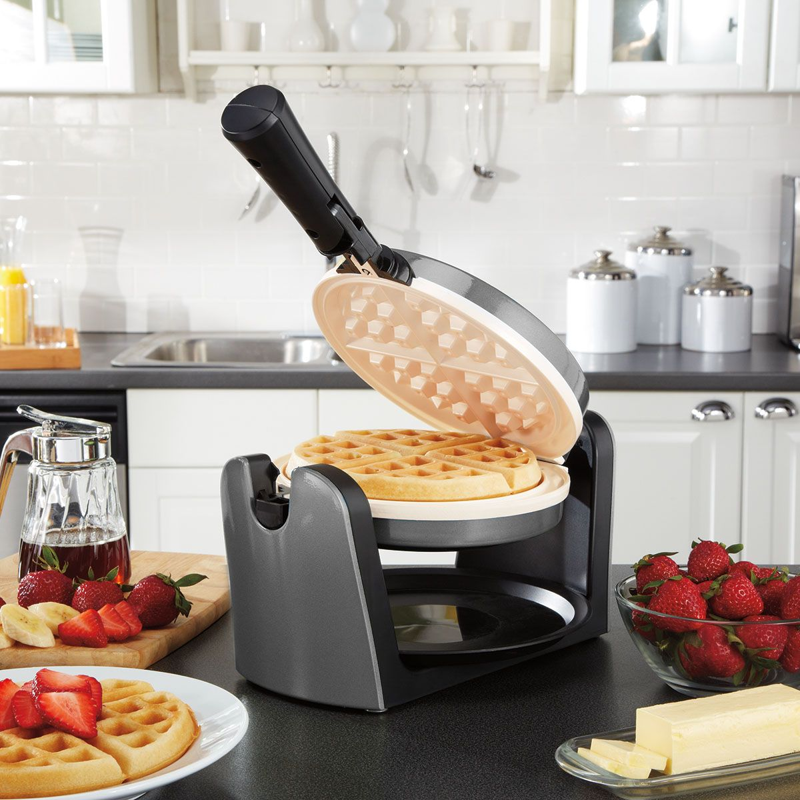
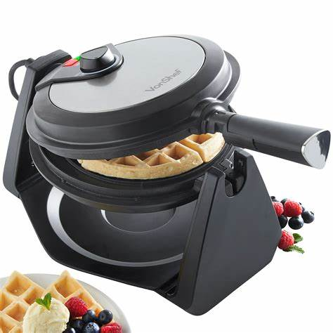
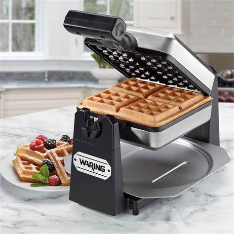
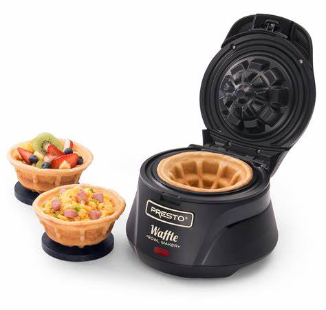
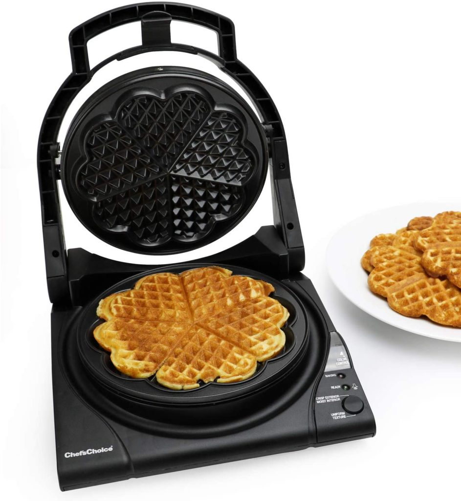
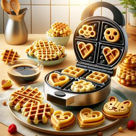

Classic Waffle Maker

A Classic Waffle Maker is a kitchen appliance designed specifically to cook waffles in a consistent and easy manner. These devices typically have two heated plates with a patterned surface, which creates the waffle's characteristic grid-like structure. Here are some key features and aspects of a Classic Waffle Maker
Portable

A Portable Waffle Maker is a compact, lightweight waffle maker designed for convenience, allowing you to make waffles anywhere, anytime, without needing a full-sized kitchen appliance. It's perfect for people with limited kitchen space, or those who love to take their waffle-making on the go—whether it’s to the office, a dorm room, or even when traveling.
No Mess-Waffle Maker

This waffle maker features a unique moat that catches excess batter, preventing spills and making cleanup effortless. It offers seven browning settings, allowing for precise customization of waffle texture.
Mini

A Mini Waffle Maker is a compact and portable kitchen appliance designed to make smaller-sized waffles, typically one at a time. It's ideal for individuals or small households who want to make quick, single servings of waffles without using a large waffle maker.
Shape Lovers

A Shape Lover Waffle Maker is a fun and creative kitchen appliance designed for people who enjoy unique and playful waffle shapes. Instead of making traditional round or square waffles, this type of waffle maker allows you to create waffles in a variety of fun, themed shapes that can appeal to kids and adults alike. It’s perfect for adding some excitement to breakfast or snack time.
Shape your Food

A Shape Lover Waffle Maker is a fun and creative kitchen appliance designed for people who enjoy unique and playful waffle shapes. Instead of making traditional round or square waffles, this type of waffle maker allows you to create waffles in a variety of fun, themed shapes that can appeal to kids and adults alike. It’s perfect for adding some excitement to breakfast or snack time.